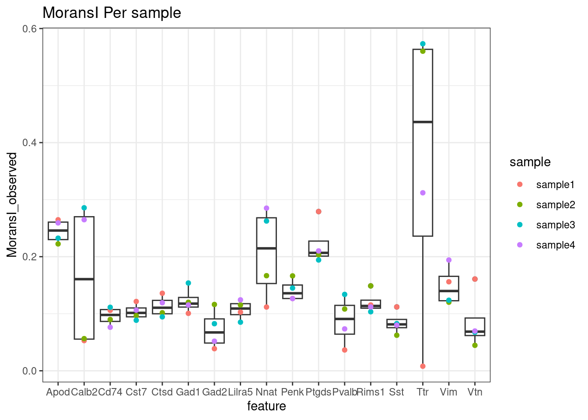

Spatially resticted genes
Sarah Williams
Last updated: 2024-11-01
Checks: 7 0
Knit directory: spatialsnippets/
This reproducible R Markdown analysis was created with workflowr (version 1.7.1). The Checks tab describes the reproducibility checks that were applied when the results were created. The Past versions tab lists the development history.
Great! Since the R Markdown file has been committed to the Git repository, you know the exact version of the code that produced these results.
Great job! The global environment was empty. Objects defined in the global environment can affect the analysis in your R Markdown file in unknown ways. For reproduciblity it’s best to always run the code in an empty environment.
The command set.seed(20231017) was run prior to running
the code in the R Markdown file. Setting a seed ensures that any results
that rely on randomness, e.g. subsampling or permutations, are
reproducible.
Great job! Recording the operating system, R version, and package versions is critical for reproducibility.
Nice! There were no cached chunks for this analysis, so you can be confident that you successfully produced the results during this run.
Great job! Using relative paths to the files within your workflowr project makes it easier to run your code on other machines.
Great! You are using Git for version control. Tracking code development and connecting the code version to the results is critical for reproducibility.
The results in this page were generated with repository version da09a66. See the Past versions tab to see a history of the changes made to the R Markdown and HTML files.
Note that you need to be careful to ensure that all relevant files for
the analysis have been committed to Git prior to generating the results
(you can use wflow_publish or
wflow_git_commit). workflowr only checks the R Markdown
file, but you know if there are other scripts or data files that it
depends on. Below is the status of the Git repository when the results
were generated:
Ignored files:
Ignored: .Rhistory
Ignored: .Rproj.user/
Ignored: analysis/contributions.nb.html
Ignored: analysis/e_neighbourcellchanges.nb.html
Ignored: analysis/e_spatiallyRestrictedGenesVoyager.nb.html
Ignored: analysis/g_toolkits.nb.html
Ignored: analysis/glossary.nb.html
Ignored: renv/library/
Ignored: renv/staging/
Untracked files:
Untracked: code/scwat-at_betweenClusters_heterotypic_score_functions.R
Untracked: other/
Note that any generated files, e.g. HTML, png, CSS, etc., are not included in this status report because it is ok for generated content to have uncommitted changes.
These are the previous versions of the repository in which changes were
made to the R Markdown
(analysis/e_spatiallyRestrictedGenes.Rmd) and HTML
(docs/e_spatiallyRestrictedGenes.html) files. If you’ve
configured a remote Git repository (see ?wflow_git_remote),
click on the hyperlinks in the table below to view the files as they
were in that past version.
| File | Version | Author | Date | Message |
|---|---|---|---|---|
| Rmd | da09a66 | swbioinf | 2024-11-01 | wflow_publish("analysis") |
| html | 0ce06a8 | swbioinf | 2024-11-01 | Build site. |
| Rmd | 6cf65ff | swbioinf | 2024-11-01 | wflow_publish("analysis/e_spatiallyRestrictedGenes.Rmd") |
| Rmd | 45cde50 | swbioinf | 2024-10-28 | adding halfbuilt files |
| html | 4e21b4e | swbioinf | 2024-07-03 | Build site. |
| Rmd | a10809a | swbioinf | 2024-07-03 | wflow_publish("analysis/e_spatiallyRestrictedGenes.Rmd") |
| Rmd | fd64e30 | swbioinf | 2024-06-18 | new plots |
Overview
It is possible to test for genes that are expressed in a spatially non-random pattern. These might be restricted to regions of a tissu (e.g. epithelia), with a very punctate expression in selected cells only (e.g. immunoglobulins in plasma cells).
One popular approach to find these genes is the MoransI test of spatial autocorrelation.
This example will show how to use the morans test within seurat to find spatially restricted genes.
This requires:
- X,Y coordinates of individual transcripts, or their cells.
- Annotation of the tissue samples in the cell metadata (if multiple samples)
There is no need for celltype annotation.
For example:
- What cells are saptially restricted in this tissue, are they in a layer of epithelial cells, some structure or elsewhere.
- Are some cancer-related genes showing a restricted spatial expression (and does this align with tumour-dense regions?)
Steps:
- Subset each tissue
- Calculate moransI for each sample
- Join and inspect results.
Worked example
Paper Microglia-astrocyte crosstalk in the amyloid plaque niche of an Alzheimer’s disease mouse model, as revealed by spatial transcriptomics(Mallach et al. 2024) (Mallach et al. 2024) explores the spatial transcritome of amaloid plaques in a mouse model.
Their work includes an analysis of cosMX samples from of 4 mouse brain samples.
Those sections show a very distinct spatial patterning of the different brain structures. This example will test which genes are expressed in a spatially restricted pattern, independently of any celltype annotations. e.g.
- Present within or nearby a given structure
- Existing in ‘clumps’ e.g. high expression on a small subset of cells
Load libraries and data
Load relevant libraries
# NB: The Rfast2 and ape packages may need to be installed
# to use the moransI test (in addition to Seurat)
# The GSL system library might also need to be installed, if it isn't already.
# install.packages('Rfast2')
# install.packages('ape')
library(Seurat)
library(tidyverse)
library(DT)And load the preprocessed Seurat object.
dataset_dir <- '~/projects/spatialsnippets/datasets/GSE263793_Mallach2024_AlzPlaque/processed_data/'
seurat_file_01_preprocessed <- file.path(dataset_dir, "GSE263793_AlzPlaque_seurat_01_preprocessed.RDS")
so <- readRDS(seurat_file_01_preprocessed)Spatially variable features
Morans test can be slow to run, so save time by only running it on variable features. Variable features are those with a non-even distribution across cells, and are routinely deteced with FindVariableFeatures() during preprocessing. Non variable features are unlikely to be spatially restricted.
For the purpose of this demo, recalculate just the top 10 variable features. The actual number for a real experiment could be judged from the variable features plot below, e.g. 100-200-2000 (it really depends on your panel!).
num_variable_features = 10 # Test only, Would be 100+ in real life
so <- FindVariableFeatures(so, nfeatures=num_variable_features)
VariableFeaturePlot(so)We will look for spatially variable features on each of our tissue samples indenedantly; in this case 4 samples across 2 slides. But first, just test one.
We do this because all probes are essentially going to be restricted to the tissue itself, not the surrounding empty slide. This might be particularly noticeable on a panel of many small cores.
First, subset to just one tissue sample.
so.sample <- subset( so, subset= sample == 'sample1')Then find the spatially variable genes with FindSpatiallyVariableFeatures() function.
That code should look like this:
so.sample <- FindSpatiallyVariableFeatures(
so.sample,
assay = "RNA",
features = VariableFeatures(so.sample),
selection.method = "moransi",
layer = "counts")However, right now, there is a bug with the current FindSpatiallyVariableFeatures function, described here. Likely that issue will be closed when this is fixed!
If you see the following error - try a workaround, using a customised version of this that avoids the issue in just this dataset. The custom version, may be found here
Error in `LayerData<-`:
! 'layer' must be a single non-empty stringThe adjusted function is called as:
# Workaround
# Available: https://github.com/swbioinf/spatialsnippets/blob/main/code/spatially_variable_features_code.R
source("code/spatially_variable_features_code.R")
so.sample <- FindSpatiallyVariableFeatures.Seurat_EDITED(
so.sample,
assay = "RNA",
features = VariableFeatures(so.sample),
selection.method = "moransi",
layer = "counts")[1] ">>>> USING EDITED FUNCTION!!!! <<<"FindSpatiallyVariableFeatures() should return a seurat object with the moransI scores embedded in the feature metatdata of the ‘RNA’ assay.
gene_metadata <- so.sample[["RNA"]]@meta.data
#NB: This is geme metadata, different to the usual *cell* metadata found at so.sample@meta.data
# so.sample[['RNA']] retreives the 'RNA' assay.
DT::datatable(head(gene_metadata), width='100%')The whole gene-metadata includes other columns, and in fact the columns we are interested in only have values for the ‘variable’ genes that we tested. So, make a summary table with just the relevant data.
gene_metadata_morans <-
filter(gene_metadata, !is.na(moransi.spatially.variable.rank)) %>%
select(feature,
MoransI_observed, MoransI_p.value, moransi.spatially.variable,moransi.spatially.variable.rank) %>%
arrange(moransi.spatially.variable.rank)
DT::datatable(gene_metadata_morans, width = '100%')Plot results
We can pull out the most significant genes from that table.
top_genes = gene_metadata_morans$feature[1:3]
top_genes[1] "Ptgds" "Penk" "Drd4" Here we are plotting the top 3 genes on that slide. Each has a different but clear reasons for being spatially restricted. Ptgds and Penk seem to be restricted to specific regions of the tissue. Wherease Drd4 seems to have high expression in a subset of cells - its proximity to itself also triggers the significance n the moransI test.
NB: Genes without any sort of spatial pattern (e.g negative controls) might still have some sort of moransI test significance - since they’re still restricted to the tissue itself, it isn’t random.
ImageDimPlot(so.sample, fov = "AD2.AD3.CosMx",
molecules = top_genes,
group.by = 'sample', cols = c("grey30"), # Make all cells grey.
boundaries = "segmentation",
border.color = 'black', axes = T, crop=TRUE)
| Version | Author | Date |
|---|---|---|
| 0ce06a8 | swbioinf | 2024-11-01 |
Run across all samples
Realistically, we would want to test all samples. Here we run the test on each tissue sample separately.
samples <- levels(so@meta.data$sample)
results_list <- list()
for (the_sample in samples) {
so.sample <- subset( so, subset= sample == the_sample)
# Again, this should be:
#so.sample <- FindSpatiallyVariableFeatures(
so.sample <- FindSpatiallyVariableFeatures.Seurat_EDITED(
so.sample,
assay = "RNA",
features = VariableFeatures(so.sample),
selection.method = "moransi",
layer = "counts"
)
gene_metadata <- so.sample[["RNA"]]@meta.data
results <-
select(gene_metadata,
feature,
MoransI_observed,
MoransI_p.value,
moransi.spatially.variable,
moransi.spatially.variable.rank) %>%
filter(!is.na(moransi.spatially.variable.rank)) %>% # only tested
arrange(moransi.spatially.variable.rank) %>%
mutate(sample = the_sample) %>%
select(sample, everything())
results_list[[the_sample]] <- results
}[1] ">>>> USING EDITED FUNCTION!!!! <<<"
[1] ">>>> USING EDITED FUNCTION!!!! <<<"
[1] ">>>> USING EDITED FUNCTION!!!! <<<"
[1] ">>>> USING EDITED FUNCTION!!!! <<<"results_all <- bind_rows(results_list)Display results for variable genes
DT::datatable(results_all, width='100%') Ttr had a higher MoransI score in sample4 than sample1. Plotting its distribution in both demonstrates the difference - a very high expression region in sample4.
ImageDimPlot(
subset( so, subset = sample == 'sample1'),
fov = "AD2.AD3.CosMx",
molecules = 'Ttr',
group.by = 'sample', cols = c("grey30"), # Make all cells grey.
boundaries = "segmentation",
border.color = 'black', axes = T, crop=TRUE)
ImageDimPlot(
subset( so, subset = sample == 'sample4'),
fov = "AD4.AD5.CosMx", # note the slide it is on.
molecules = 'Ttr',
group.by = 'sample', cols = c("grey30"), # Make all cells grey.
boundaries = "segmentation",
border.color = 'black', axes = T, crop=TRUE)
Code Snippet
Assumes that tissue samples are in a metadata column data called ‘sample’. If there are multiple slides, it may be neccessary to call joinlayers.
library(Seurat)
library(tidyverse)
library(DT)
# Load edited function, see https://github.com/satijalab/seurat/issues/8226
# Available here: https://github.com/swbioinf/spatialsnippets/blob/main/code/spatially_variable_features_code.R
source("spatially_variable_features_code.R")
# If not alread run, find variable features
num_variable_features = 1000 # Choose based on likely results and acceptable runtime
so <- FindVariableFeatures(so, nfeatures=num_variable_features)
# Record moransI results fore ach sample one by one.
samples <- levels(so@meta.data$sample)
results_list <- list()
for (the_sample in samples) {
so.sample <- subset( so, subset= sample == the_sample)
# Again, this should be:
#so.sample <- FindSpatiallyVariableFeatures(
so.sample <- FindSpatiallyVariableFeatures.Seurat_EDITED(
so.sample,
assay = "RNA",
features = VariableFeatures(so.sample),
selection.method = "moransi",
layer = "counts"
)
# Format output table
gene_metadata <- so.sample[["RNA"]]@meta.data
results <-
select(gene_metadata,
feature,
MoransI_observed,
MoransI_p.value,
moransi.spatially.variable,
moransi.spatially.variable.rank) %>%
filter(!is.na(moransi.spatially.variable.rank)) %>% # only tested
arrange(moransi.spatially.variable.rank) %>%
mutate(sample = the_sample) %>%
select(sample, everything())
results_list[[the_sample]] <- results
}
# Collect output result
results_all <- bind_rows(results_list)Results
DT::datatable(results_all, width='100%')- sample: (not a default column, added by code): What tissue sample the test was run on.
- feature : The gene being tested
- MoransI_observed : The moransI statistic calculated. Higher values indicate more spatial correlation, 0 is completely random, and negative values indicate anti-correlation (ie repulsion).
- MoransI_p.value : P-value for the moransI test.
- moransi.spatially.variable : Is this gene spatially restricted? True or false value.
- moransi.spatially.variable.rank : Ranking of the genes by spatial correlation, where 1 is the most distincly spatially restricted.
More information
- Microglia-astrocyte crosstalk in the amyloid plaque niche of an Alzheimer’s disease mouse model, as revealed by spatial transcriptomics: Data used in this example. (Mallach et al. 2024)
- MoransI wikipedia: What is MoransI test, with pictures.
- Seurat Spatially variable features: This is actually the sequencing based technology vignette (for visium data), but it covers the FindSpatiallyVariableFeatures function
- FindSpatiallyVariableFeatures() Bug report : Link to the bug report on the Seurat repo in github. Can check the status of this issue here.
- Voyager toolkit - spatial statistics for cosmx vignette : Here is a more focussed and detailed vignette on calculating spatial statistics for gene expression using the Voyager package. It does not use Seurat objects, it is rather using the bioconductor-compatible SpatialExperiment class.
References
sessionInfo()R version 4.3.2 (2023-10-31)
Platform: x86_64-pc-linux-gnu (64-bit)
Running under: Ubuntu 22.04.5 LTS
Matrix products: default
BLAS: /usr/lib/x86_64-linux-gnu/openblas-pthread/libblas.so.3
LAPACK: /usr/lib/x86_64-linux-gnu/openblas-pthread/libopenblasp-r0.3.20.so; LAPACK version 3.10.0
locale:
[1] LC_CTYPE=en_AU.UTF-8 LC_NUMERIC=C
[3] LC_TIME=en_AU.UTF-8 LC_COLLATE=en_AU.UTF-8
[5] LC_MONETARY=en_AU.UTF-8 LC_MESSAGES=en_AU.UTF-8
[7] LC_PAPER=en_AU.UTF-8 LC_NAME=C
[9] LC_ADDRESS=C LC_TELEPHONE=C
[11] LC_MEASUREMENT=en_AU.UTF-8 LC_IDENTIFICATION=C
time zone: Etc/UTC
tzcode source: system (glibc)
attached base packages:
[1] stats graphics grDevices datasets utils methods base
other attached packages:
[1] DT_0.33 lubridate_1.9.3 forcats_1.0.0 stringr_1.5.1
[5] dplyr_1.1.4 purrr_1.0.2 readr_2.1.5 tidyr_1.3.1
[9] tibble_3.2.1 ggplot2_3.5.0 tidyverse_2.0.0 Seurat_5.1.0
[13] SeuratObject_5.0.2 sp_2.1-3 workflowr_1.7.1
loaded via a namespace (and not attached):
[1] RColorBrewer_1.1-3 rstudioapi_0.16.0 jsonlite_1.8.8
[4] magrittr_2.0.3 spatstat.utils_3.0-4 farver_2.1.1
[7] rmarkdown_2.26 fs_1.6.3 vctrs_0.6.5
[10] ROCR_1.0-11 spatstat.explore_3.2-7 htmltools_0.5.8.1
[13] sass_0.4.9 sctransform_0.4.1 parallelly_1.37.1
[16] KernSmooth_2.23-22 bslib_0.7.0 htmlwidgets_1.6.4
[19] ica_1.0-3 plyr_1.8.9 plotly_4.10.4
[22] zoo_1.8-12 cachem_1.0.8 whisker_0.4.1
[25] igraph_2.0.3 mime_0.12 lifecycle_1.0.4
[28] pkgconfig_2.0.3 Matrix_1.6-5 R6_2.5.1
[31] fastmap_1.1.1 fitdistrplus_1.1-11 future_1.33.2
[34] shiny_1.8.1.1 digest_0.6.35 colorspace_2.1-0
[37] patchwork_1.2.0 ps_1.7.6 rprojroot_2.0.4
[40] tensor_1.5 RSpectra_0.16-1 irlba_2.3.5.1
[43] crosstalk_1.2.1 labeling_0.4.3 RcppZiggurat_0.1.6
[46] progressr_0.14.0 timechange_0.3.0 fansi_1.0.6
[49] spatstat.sparse_3.0-3 httr_1.4.7 polyclip_1.10-6
[52] abind_1.4-5 compiler_4.3.2 proxy_0.4-27
[55] withr_3.0.0 DBI_1.2.2 fastDummies_1.7.3
[58] highr_0.10 MASS_7.3-60.0.1 classInt_0.4-10
[61] units_0.8-5 tools_4.3.2 lmtest_0.9-40
[64] httpuv_1.6.15 future.apply_1.11.2 Rfast2_0.1.5.2
[67] goftest_1.2-3 glue_1.7.0 callr_3.7.6
[70] nlme_3.1-164 promises_1.2.1 sf_1.0-16
[73] grid_4.3.2 Rtsne_0.17 getPass_0.2-4
[76] cluster_2.1.6 reshape2_1.4.4 generics_0.1.3
[79] gtable_0.3.4 spatstat.data_3.0-4 tzdb_0.4.0
[82] class_7.3-22 hms_1.1.3 data.table_1.15.4
[85] utf8_1.2.4 spatstat.geom_3.2-9 RcppAnnoy_0.0.22
[88] ggrepel_0.9.5 RANN_2.6.1 pillar_1.9.0
[91] spam_2.10-0 RcppHNSW_0.6.0 later_1.3.2
[94] splines_4.3.2 lattice_0.22-6 renv_1.0.5
[97] survival_3.5-8 deldir_2.0-4 tidyselect_1.2.1
[100] Rnanoflann_0.0.3 miniUI_0.1.1.1 pbapply_1.7-2
[103] knitr_1.45 git2r_0.33.0 gridExtra_2.3
[106] scattermore_1.2 xfun_0.43 matrixStats_1.2.0
[109] stringi_1.8.3 lazyeval_0.2.2 yaml_2.3.8
[112] evaluate_0.23 codetools_0.2-20 BiocManager_1.30.22
[115] cli_3.6.2 RcppParallel_5.1.7 uwot_0.1.16
[118] xtable_1.8-4 reticulate_1.35.0 munsell_0.5.1
[121] processx_3.8.4 jquerylib_0.1.4 Rcpp_1.0.12
[124] globals_0.16.3 spatstat.random_3.2-3 png_0.1-8
[127] Rfast_2.1.0 parallel_4.3.2 dotCall64_1.1-1
[130] listenv_0.9.1 viridisLite_0.4.2 e1071_1.7-14
[133] scales_1.3.0 ggridges_0.5.6 leiden_0.4.3.1
[136] rlang_1.1.3 cowplot_1.1.3